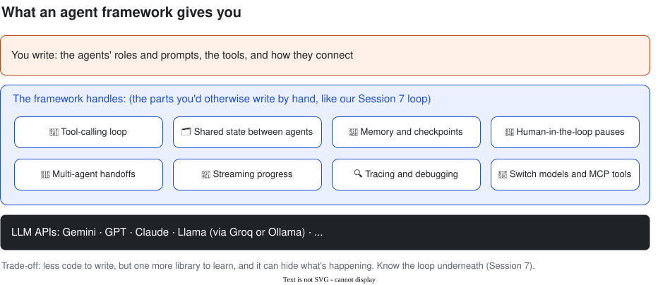
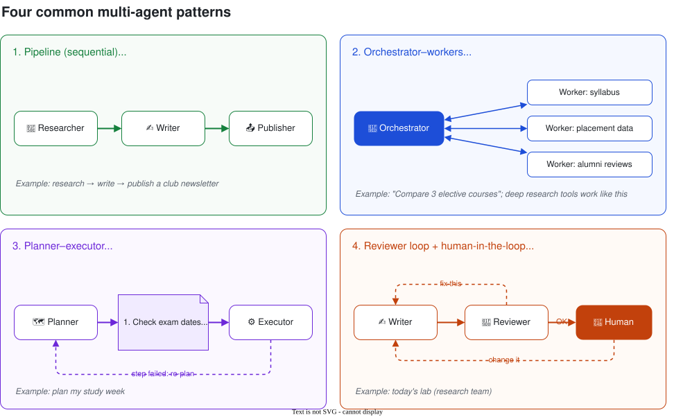

Agent Frameworks and Multi-Agent Systems
In Session 7 you wrote the agent loop by hand. Real projects also need shared state, retries, pauses for human approval, and sometimes a team of agents. Frameworks give you those building blocks. Today you'll compare the popular ones and build a researcher + writer team.
1. Why use a framework?
Your Session 7 agent was about 25 lines. A real app quickly needs more: remember state between steps, pause for a human and resume tomorrow, retry when a tool fails, show progress, log everything for debugging, and coordinate several agents. You can write all that yourself. A framework gives you tested building blocks so you focus on the agents themselves.

2. LangGraph, CrewAI and the agent SDKs compared
| Framework | How you think about it | Strengths | Good for |
|---|---|---|---|
| LangGraph (from LangChain) | A graph: nodes (agents, tools, humans) connected by edges, with shared state | Fine control, loops and branches, pause/resume, human-in-the-loop, any model | Production agents where you need control and reliability |
| CrewAI | A crew of role-playing agents (role, goal, backstory) working on tasks | Very quick to start, easy to read | Prototypes, content and research teams |
| OpenAI Agents SDK | Lightweight agents + handoffs between them, with guardrails | Small and simple, built-in tracing; best with OpenAI models, others supported | Simple multi-agent apps, triage and handoffs |
| Claude Agent SDK | The agent harness behind Claude Code: tools, files, shell, MCP, subagents | Strong general-purpose agents out of the box | Agents that work with files, code and automation |
| Google ADK (Agent Development Kit) | Agents and multi-agent systems, Gemini-first | Good Gemini integration, evaluation tools, Google Cloud deployment | Gemini and Google Cloud projects |
| Microsoft Agent Framework | Successor to AutoGen and Semantic Kernel | Multi-agent conversations, Azure integration, .NET and Python | Teams on Azure and .NET |
They all share the same core ideas you already know: an LLM, tools (often via MCP), a loop, memory and some way to coordinate agents. Pick by your model, your cloud, and how much control you need. Today's lab uses LangGraph, because its graphs make the patterns easy to see.
This space moves very fast: names, features and versions change every few months. Always check the official docs for the version you install.
3. Why more than one agent?
One agent with 20 tools and a giant prompt tends to get confused. Splitting the job into specialists helps, the same way a college fest has separate teams for sponsorship, design and logistics.
- Focus: each agent has a short, clear prompt and only the tools it needs.
- Quality checks: one agent can review another's work.
- Parallel work: several agents research different things at the same time.
- Smaller context: each agent sees only what it needs, not the whole history.
4. Four multi-agent patterns

| Pattern | How it works | Use it when |
|---|---|---|
| Pipeline (sequential) | Each agent does one step and passes the result on | The steps are clear and always in the same order |
| Orchestrator–workers | A lead agent splits the task, workers run in parallel, the lead combines the results | The task splits into independent parts (compare 3 courses, research 5 companies) |
| Planner–executor | One agent writes a plan, another carries it out, and it re-plans if a step fails | Long, multi-step tasks where a reviewable plan helps |
| Reviewer loop (evaluator–optimizer) | A critic checks the work and sends it back with feedback until it's good | Quality matters and "good" can be checked (facts, length, tests passing) |
Real systems mix these. For example, "deep research" tools use an orchestrator that sends several research workers out in parallel, then a writer, then a citation checker.
5. Human-in-the-loop
Human-in-the-loop (HITL) means the agent pauses at important moments and waits for a person. Session 5 said humans should approve risky actions; frameworks make that easy.
| Kind | Example |
|---|---|
| Approve or reject an action | "Book room S3 on Sunday 10–12?" → yes / no |
| Edit the output | Fix the article's title before publishing |
| Give feedback | "Make it more fun and add one fun fact" → back to the writer |
| Review the plan first | Check the planner's 5 steps before anything runs |
| Answer a question | Agent asks: "Do you mean the 3rd- or 5th-semester syllabus?" |
In LangGraph, a node calls interrupt(...) to pause. The graph's state is saved by a checkpointer, so it can wait seconds or days, then continue with Command(resume=...).
6. When not to use multiple agents
Remember Session 6: use the simplest thing that works. That applies even more here.
- Cost: every agent is more LLM calls. Anthropic reported that its multi-agent research system used about 15 times more tokens than a normal chat. Worth it for hard research, wasteful for simple questions.
- Coordination errors: agents can misunderstand each other, repeat work, or pass mistakes along.
- Harder to debug and test: more moving parts, different paths each run.
- Tightly linked steps: if every step needs the full context of every other step, one agent is usually better than several passing notes.
7. LangGraph in 10 minutes
LangGraph models your app as a graph. Here is the lab's team:

| Idea | What it is | In code |
|---|---|---|
| State | The shared data every node reads and updates | class TeamState(TypedDict): topic, notes, draft, feedback, approved, revisions |
| Node | A Python function: takes the state, returns updates | graph.add_node("writer", writer) |
| Edge | Always go from A to B | graph.add_edge("researcher", "writer") |
| Conditional edge | Your function decides where to go next | graph.add_conditional_edges("reviewer", after_review, [...]) |
| Checkpointer | Saves the state after every step (pause, resume, history) | graph.compile(checkpointer=InMemorySaver()) |
| Interrupt | Pause and wait for a human | answer = interrupt({"draft": ...}) |
def after_review(state):
if state["approved"] or state["revisions"] >= MAX_REVISIONS:
return "human_approval"
return "writer" # loop back with the reviewer's feedback
def human_approval(state):
answer = interrupt({"draft": state["draft"], "question": "Type 'yes' to publish, or what to change:"})
if answer.strip().lower() in ("yes", "y"):
return {"approved": True, "feedback": ""}
return {"approved": False, "feedback": f"Editor-in-chief says: {answer}"}
graph = StateGraph(TeamState)
graph.add_node("researcher", researcher)
graph.add_node("writer", writer)
graph.add_node("reviewer", reviewer)
graph.add_node("human_approval", human_approval)
graph.add_edge(START, "researcher")
graph.add_edge("researcher", "writer")
graph.add_edge("writer", "reviewer")
graph.add_conditional_edges("reviewer", after_review, ["writer", "human_approval"])
graph.add_conditional_edges("human_approval", lambda s: END if s["approved"] else "writer", ["writer", END])
app = graph.compile(checkpointer=InMemorySaver())Each agent is a plain function. For example, the reviewer uses structured output (Session 2) so the graph can branch on a real True/False:
class Review(BaseModel):
approved: bool
feedback: str
def reviewer(state):
review = llm.with_structured_output(Review).invoke([
SystemMessage(REVIEWER_PROMPT),
HumanMessage(f"Research notes:\n{state['notes']}\n\nDraft:\n{state['draft']}"),
])
return {"approved": review.approved, "feedback": review.feedback}8. The same team in CrewAI (for comparison)
CrewAI describes the same idea as a crew of role-playing agents and tasks. A sketch, to compare styles (not part of the lab; check the CrewAI docs for the current API):
from crewai import Agent, Task, Crew, Process
researcher = Agent(role="Researcher", goal="Find accurate facts about {topic}",
backstory="A careful fact-finder for a college magazine.",
llm="gemini/gemini-2.5-flash")
writer = Agent(role="Writer", goal="Write a 200-word article for first-year students",
backstory="A friendly tech-magazine writer.",
llm="gemini/gemini-2.5-flash")
research = Task(description="Research {topic}. List 6-10 key facts with sources.",
expected_output="Bullet-point notes with URLs", agent=researcher)
write = Task(description="Write the article using the research notes.",
expected_output="A ~200-word article with a Sources list", agent=writer, context=[research])
crew = Crew(agents=[researcher, writer], tasks=[research, write], process=Process.sequential)
print(crew.kickoff(inputs={"topic": "Chandrayaan-3"}))Shorter to write, and very readable. LangGraph takes more code but gives you explicit loops, branches, pauses and state, which matter once real users depend on it.
9. Lab: a research team of agents (40 min)
- Build a real
search_wikipediatool (free, no key). - Write three agents as plain functions: researcher (with the tool), writer, reviewer (structured output).
- Run them as a simple Python pipeline.
- Wire the same functions into a LangGraph graph with a review loop and a human-approval pause.
- Run it as the editor-in-chief: ask for changes, then approve.
- Look inside the saved state and history.
search_faq or Session 7 tools. Count how many LLM calls one article took.
10. Recap
- Frameworks give you the loop, state, memory, pauses, tracing and multi-agent wiring. You write the agents.
- LangGraph = graphs with control; CrewAI = quick role-based crews; agent SDKs from OpenAI, Anthropic, Google and Microsoft = lighter, model-specific toolkits.
- Multiple agents help with focus, quality checks and parallel work.
- Patterns: pipeline, orchestrator–workers, planner–executor, reviewer loop.
- Human-in-the-loop: pause, let a person approve, edit or give feedback, then resume.
- Multi-agent costs many more tokens and is harder to debug. Start with one agent; split only for a clear reason.
Quick quiz
1. Name three things a framework gives you that you'd otherwise write by hand.
Any three: the tool-calling loop, shared state, memory/checkpoints, human-in-the-loop pauses, multi-agent handoffs, streaming, tracing, model switching.2. LangGraph vs CrewAI in one line each?
LangGraph: a graph of nodes and edges with explicit state and control. CrewAI: a crew of role-playing agents doing tasks, quick to set up.3. Which pattern fits "compare 5 companies for placements"?
Orchestrator–workers: one worker per company in parallel, then the orchestrator combines.4. What does a reviewer (critic) agent add?
A quality check: it compares the work to the rules or sources and sends it back with feedback until it's good.5. In LangGraph, what makes it possible to pause for a human and resume later?
interrupt() to pause, plus a checkpointer that saves the state; then Command(resume=...) continues.6. Give two reasons not to use multiple agents.
Any two: many more tokens (cost), coordination errors, harder to debug and test, tightly linked steps work better in one agent.7. Why does the reviewer use structured output?
So the graph gets a realapproved: True/False to branch on, instead of trying to read a free-text answer.Glossary
| Term | Meaning in one line |
|---|---|
| Agent framework | A library of building blocks for agents: loop, state, tools, memory, coordination. |
| Multi-agent system | Several agents with different roles working together on one task. |
| Orchestrator | A lead agent that splits work and combines results. |
| Worker / subagent | An agent that handles one part of a bigger task. |
| Handoff | One agent passing the conversation or task to another. |
| Planner–executor | One agent plans the steps, another carries them out. |
| Evaluator / critic | An agent that checks another agent's work. |
| Human-in-the-loop (HITL) | The agent pauses for a person to approve, edit or give feedback. |
| State (LangGraph) | The shared data passed between nodes. |
| Node / edge | A step in the graph / a connection deciding what runs next. |
| Checkpointer | Saves the state after each step so the graph can pause, resume and replay. |
| Interrupt | LangGraph's way to pause a graph and wait for input. |
Learn more (free)
- LangChain Academy, Introduction to LangGraph (free course)
- Anthropic, How we built our multi-agent research system (engineering blog)
- Anthropic, Building effective agents (patterns: chaining, routing, orchestrator-workers, evaluator-optimizer)
- Official docs: CrewAI, OpenAI Agents SDK, Claude Agent SDK, Google ADK
Instructor guide
Suggested plan for the 90 minutes. Press S in the slides to open speaker notes.
| Time | Segment | What to do |
|---|---|---|
| 0–5 min | Hook | Show the Session 7 loop. Ask: what if it must pause for approval until tomorrow? What if we want three agents? |
| 5–18 min | Frameworks | Framework stack diagram. Comparison table: focus on "how you think about it", not features. |
| 18–33 min | Multi-agent + patterns | College-fest-teams analogy. Four patterns; ask the class to match each to a campus example. |
| 33–40 min | HITL + when not | HITL table. The 15× tokens point. "Start with one agent." |
| 40–48 min | LangGraph basics | Lab graph diagram, then the code: state, nodes, edges, conditional edges, interrupt. |
| 48–85 min | Lab | Students run Steps 1–6. Ask a few to share the funniest feedback they gave as editor-in-chief. |
| 85–90 min | Recap + quiz | Quiz 3, 5 and 6. Preview Session 9: taking agents to production. |
MODEL name and package versions (written for LangGraph 1.x). One article takes roughly 6–10 LLM calls, so free-tier limits hit sooner: stagger the class or keep a backup key. If the campus Wi-Fi is rate-limited by Wikipedia, the backup facts keep the default topic working.